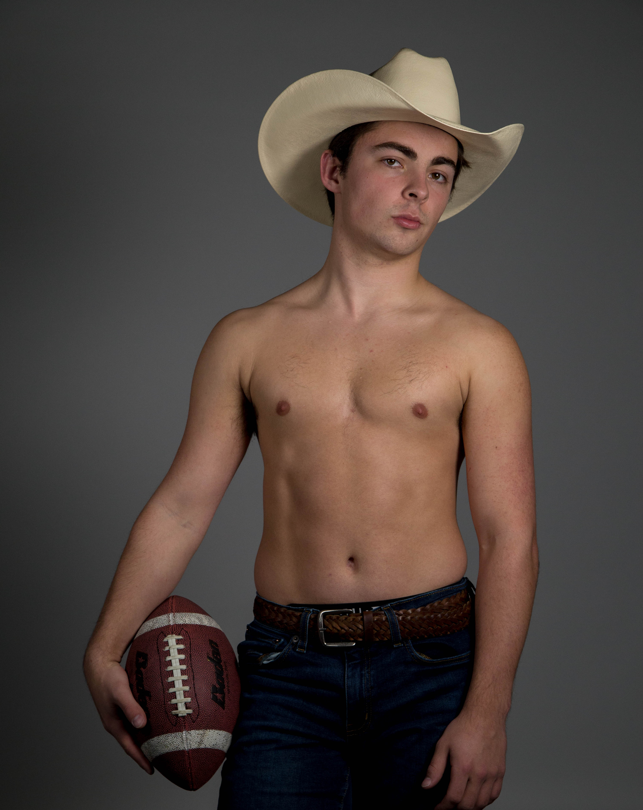

Portraits



These photographs come from my Portrait Series that I did for my Photography I class. I chose to photography my friend, and this idea began as a joke picture, but ended up looking much better than I had expected, so I ended up using it in the Photo 1 Student Showcase in Riley Hall. Now, it is in the process of being sold to a local artist who focuses on gender roles and masculinity.


In this series, I combine food coloring and water to document the spontaneity and randomness seconds after dropping food coloring into a bowl of water. My idea for this project was initially sparked by the desire to portray the chaos in a human's brain when one has a mental illness.


Therefore, when it came time to photograph an item with many perspectives for my photography class, my mind IMMEDIATELY went to my Crocs. What you see here is the process of taking one image (the overhead perspective) from a fifteen image series. What made these images interesting to me (beyond the subject itself) was the contrast in colors between the neutral colors of the road and the vibrant colors of the Crocs.